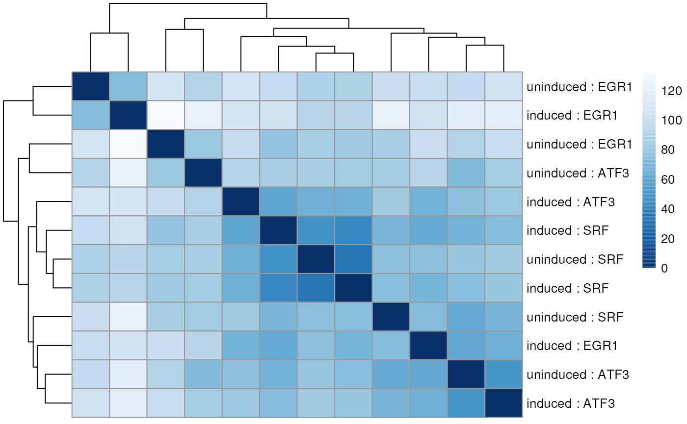

recount quick start guide
Leonardo Collado-Torres
Lieber Institute for Brain Development, Johns Hopkins Medical CampusCenter for Computational Biology, Johns Hopkins Universitylcolladotor@gmail.com
7 May 2023
Source:vignettes/recount-quickstart.Rmd
recount-quickstart.RmdBasics
Install recount
R is an open-source statistical environment which can be
easily modified to enhance its functionality via packages. recount
is a R package available via the Bioconductor repository
for packages. R can be installed on any operating system
from CRAN after which you can
install recount
by using the following commands in your R session:
if (!requireNamespace("BiocManager", quietly = TRUE)) {
install.packages("BiocManager")
}
BiocManager::install("recount")
## Check that you have a valid Bioconductor installation
BiocManager::valid()Required knowledge
recount is based on many other packages and in particular in those that have implemented the infrastructure needed for dealing with RNA-seq data. That is, packages like GenomicFeatures and rtracklayer that allow you to import the data. A recount user is not expected to deal with those packages directly but will need to be familiar with SummarizedExperiment to understand the results recount generates. It might also prove to be highly beneficial to check the
- DESeq2 package for performing differential expression analysis with the RangedSummarizedExperiment objects,
- DEFormats package for switching the objects to those used by other differential expression packages such as edgeR,
- derfinder package for performing annotation-agnostic differential expression analysis.
If you are asking yourself the question “Where do I start using Bioconductor?” you might be interested in this blog post.
Asking for help
As package developers, we try to explain clearly how to use our
packages and in which order to use the functions. But R and
Bioconductor have a steep learning curve so it is critical
to learn where to ask for help. The blog post quoted above mentions some
but we would like to highlight the Bioconductor support site
as the main resource for getting help: remember to use the
recount tag and check the older posts.
Other alternatives are available such as creating GitHub issues and
tweeting. However, please note that if you want to receive help you
should adhere to the posting
guidelines. It is particularly critical that you provide a small
reproducible example and your session information so package developers
can track down the source of the error.
Workflow using recount
We have written a workflow on how to use recount that explains more details on how to use this package with other Bioconductor packages as well as the details on the actual counts provided by recount. Check it at f1000research.com/articles/6-1558/v1 or bioconductor.org/help/workflows/recountWorkflow/ (Collado-Torres, Nellore, and Jaffe, 2017).
Citing recount
We hope that recount will be useful for your research. Please use the following information to cite the package and the overall approach. Thank you!
## Citation info
citation("recount")##
## To cite package 'recount' in publications use:
##
## Collado-Torres L, Nellore A, Kammers K, Ellis SE, Taub MA, Hansen KD,
## Jaffe AE, Langmead B, Leek JT (2017). "Reproducible RNA-seq analysis
## using recount2." _Nature Biotechnology_. doi:10.1038/nbt.3838
## <https://doi.org/10.1038/nbt.3838>,
## <http://www.nature.com/nbt/journal/v35/n4/full/nbt.3838.html>.
##
## Collado-Torres L, Nellore A, Jaffe AE (2017). "recount workflow:
## Accessing over 70,000 human RNA-seq samples with Bioconductor
## [version 1; referees: 1 approved, 2 approved with reservations]."
## _F1000Research_. doi:10.12688/f1000research.12223.1
## <https://doi.org/10.12688/f1000research.12223.1>,
## <https://f1000research.com/articles/6-1558/v1>.
##
## Ellis SE, Collado-Torres L, Jaffe AE, Leek JT (2018). "Improving the
## value of public RNA-seq expression data by phenotype prediction."
## _Nucl. Acids Res._. doi:10.1093/nar/gky102
## <https://doi.org/10.1093/nar/gky102>,
## <https://doi.org/10.1093/nar/gky102>.
##
## Collado-Torres L, Nellore A, Kammers K, Ellis SE, Taub MA, Hansen KD,
## Jaffe AE, Langmead B, Leek JT (2023). _Explore and download data from
## the recount project_. doi:10.18129/B9.bioc.recount
## <https://doi.org/10.18129/B9.bioc.recount>,
## https://github.com/leekgroup/recount - R package version 1.27.0,
## <http://www.bioconductor.org/packages/recount>.
##
## Frazee AC, Langmead B, Leek JT (2011). "ReCount: A multi-experiment
## resource of analysis-ready RNA-seq gene count datasets." _BMC
## Bioinformatics_. doi:10.1186/1471-2105-12-449
## <https://doi.org/10.1186/1471-2105-12-449>,
## <https://doi.org/10.1186/1471-2105-12-449>.
##
## Razmara A, Ellis SE, Sokolowski DJ, Davis S, Wilson MD, Leek JT,
## Jaffe AE, Collado-Torres L (2019). "recount-brain: a curated
## repository of human brain RNA-seq datasets metadata." _bioRxiv_.
## doi:10.1101/618025 <https://doi.org/10.1101/618025>,
## <https://doi.org/10.1101/618025>.
##
## Imada E, Sanchez DF, Collado-Torres L, Wilks C, Matam T, Dinalankara
## W, Stupnikov A, Lobo-Pereira F, Yip C, Yasuzawa K, Kondo N, Itoh M,
## Suzuki H, Kasukawa T, Hon CC, de Hoon MJ, Shin JW, Carninci P, Jaffe
## AE, Leek JT, Favorov A, Franco GR, Langmead B, Marchionni L (2020).
## "Recounting the FANTOM CAGE–Associated Transcriptome." _Genome
## Research_. doi:10.1101/gr.254656.119
## <https://doi.org/10.1101/gr.254656.119>,
## <https://doi.org/10.1101/gr.254656.119>.
##
## To see these entries in BibTeX format, use 'print(<citation>,
## bibtex=TRUE)', 'toBibtex(.)', or set
## 'options(citation.bibtex.max=999)'.Quick start to using to recount
Main updates:
- As of January 30, 2017 the annotation used for the exon and gene counts is Gencode v25.
- As of January 12, 2018 transcripts counts are available via recount2 thanks to the work of Fu et al, bioRxiv, 2018. Disjoint exon counts (version 2) were also released as described in detail in the recount website documentation tab.
- As of April 29, 2019 FANTOM-CAT/recount2 annotation quantifications area available via recount2 thanks to the work by Imada, Sanchez, et al., bioRxiv, 2019.

Here is a very quick example of how to download a
RangedSummarizedExperiment object with the gene counts for
a 2 groups project (12 samples) with SRA study id SRP009615
using the recount
package (Collado-Torres, Nellore, Kammers, Ellis, Taub, Hansen, Jaffe,
Langmead, and Leek, 2017). The RangedSummarizedExperiment
object is defined in the SummarizedExperiment
(Morgan, Obenchain, Hester, and Pagès, 2017) package and can be used for
differential expression analysis with different packages. Here we show
how to use DESeq2
(Love, Huber, and Anders, 2014) to perform the differential expresion
analysis.
This quick analysis is explained in more detail later on in this document. Further information about the recount project can be found in the main publication. Check the recount website for related publications.
## Load library
library("recount")
## Find a project of interest
project_info <- abstract_search("GSE32465")
## Download the gene-level RangedSummarizedExperiment data
download_study(project_info$project)
## Load the data
load(file.path(project_info$project, "rse_gene.Rdata"))
## Browse the project at SRA
browse_study(project_info$project)
## View GEO ids
colData(rse_gene)$geo_accession
## Extract the sample characteristics
geochar <- lapply(split(colData(rse_gene), seq_len(nrow(colData(rse_gene)))), geo_characteristics)
## Note that the information for this study is a little inconsistent, so we
## have to fix it.
geochar <- do.call(rbind, lapply(geochar, function(x) {
if ("cells" %in% colnames(x)) {
colnames(x)[colnames(x) == "cells"] <- "cell.line"
return(x)
} else {
return(x)
}
}))
## We can now define some sample information to use
sample_info <- data.frame(
run = colData(rse_gene)$run,
group = ifelse(grepl("uninduced", colData(rse_gene)$title), "uninduced", "induced"),
gene_target = sapply(colData(rse_gene)$title, function(x) {
strsplit(strsplit(
x,
"targeting "
)[[1]][2], " gene")[[1]][1]
}),
cell.line = geochar$cell.line
)
## Scale counts by taking into account the total coverage per sample
rse <- scale_counts(rse_gene)
## Add sample information for DE analysis
colData(rse)$group <- sample_info$group
colData(rse)$gene_target <- sample_info$gene_target
## Perform differential expression analysis with DESeq2
library("DESeq2")
## Specify design and switch to DESeq2 format
dds <- DESeqDataSet(rse, ~ gene_target + group)
## Perform DE analysis
dds <- DESeq(dds, test = "LRT", reduced = ~gene_target, fitType = "local")
res <- results(dds)
## Explore results
plotMA(res, main = "DESeq2 results for SRP009615")
## Make a report with the results
library("regionReport")
DESeq2Report(dds,
res = res, project = "SRP009615",
intgroup = c("group", "gene_target"), outdir = ".",
output = "SRP009615-results"
)The recount project also hosts the necessary data to perform annotation-agnostic differential expression analyses with derfinder (Collado-Torres, Nellore, Frazee, Wilks, Love, Langmead, Irizarry, Leek, and Jaffe, 2017). An example analysis would like this:
## Define expressed regions for study SRP009615, only for chromosome Y
regions <- expressed_regions("SRP009615", "chrY",
cutoff = 5L,
maxClusterGap = 3000L
)
## Compute coverage matrix for study SRP009615, only for chromosome Y
system.time(rse_ER <- coverage_matrix("SRP009615", "chrY", regions))
## Round the coverage matrix to integers
covMat <- round(assays(rse_ER)$counts, 0)
## Get phenotype data for study SRP009615
pheno <- colData(rse_ER)
## Complete the phenotype table with the data we got from GEO
m <- match(pheno$run, sample_info$run)
pheno <- cbind(pheno, sample_info[m, 2:3])
## Build a DESeqDataSet
dds_ers <- DESeqDataSetFromMatrix(
countData = covMat, colData = pheno,
design = ~ gene_target + group
)
## Perform differential expression analysis with DESeq2 at the ER-level
dds_ers <- DESeq(dds_ers,
test = "LRT", reduced = ~gene_target,
fitType = "local"
)
res_ers <- results(dds_ers)
## Explore results
plotMA(res_ers, main = "DESeq2 results for SRP009615 (ER-level, chrY)")
## Create a more extensive exploratory report
DESeq2Report(dds_ers,
res = res_ers,
project = "SRP009615 (ER-level, chrY)",
intgroup = c("group", "gene_target"), outdir = ".",
output = "SRP009615-results-ER-level-chrY"
)Introduction
recount is an R package that provides an interface to the recount project website. This package allows you to download the files from the recount project and has helper functions for getting you started with differential expression analyses. This vignette will walk you through an example.
Sample DE analysis
This is a brief overview of what you can do with recount. In this particular example we will download data from the SRP009615 study which sequenced 12 samples as described in the previous link.
If you don’t have recount installed, please do so with:
install.packages("BiocManager")
BiocManager::install("recount")Next we load the required packages. Loading recount will load the required dependencies.
Lets say that we don’t know the actual SRA accession number for this
study but we do know a particular term which will help us identify it.
If that’s the case, we can use the abstract_search()
function to identify the study of interest as shown below.
## Find a project of interest
project_info <- abstract_search("GSE32465")
## Explore info
project_info## number_samples species
## 340 12 human
## abstract
## 340 Summary: K562-shX cells are made in an effort to validate TFBS data and ChIP-seq antibodies in Myers lab (GSE32465). K562 cells are transduced with lentiviral vector having Tet-inducible shRNA targeting a transcription factor gene. Cells with stable integration of shRNA constructs are selected using puromycin in growth media. Doxycycline is added to the growth media to induce the expression of shRNA and a red fluorescent protein marker. A successful shRNA cell line shows at least a 70% reduction in expression of the target transcription factor as measured by qPCR. For identification, we designated these cell lines as K562-shX, where X is the transcription factor targeted by shRNA and K562 denotes the parent cell line. For example, K562-shATF3 cells are K562 derived cells selected for stable integration of shRNA targeting the transcription factor ATF3 gene and showed at least a 70% reduction in the expression of ATF3 gene when measured by qPCR. Cells growing without doxycycline (uninduced) are used as a control to measure the change in expression of target transcription factor gene after induction of shRNA using doxycycline. For detailed growth and culturing protocols for these cells please refer to http://hudsonalpha.org/myers-lab/protocols . To identify the potential downstream targets of the candidate transcription factor, analyze the mRNA expression profile of the uninduced and induced K562-shX using RNA-seq. For data usage terms and conditions, please refer to http://www.genome.gov/27528022 and http://www.genome.gov/Pages/Research/ENCODE/ENCODEDataReleasePolicyFinal2008.pdf Overall Design: Make K562-shX cells as described in the http://hudsonalpha.org/myers-lab/protocols . Measure the mRNA expression levels in uninduced K562-shX and induced K562-shX cells in two biological replicates using RNA-seq. Identify the potential downstream targets of the candidate transcription factor.
## project
## 340 SRP009615Download data
Now that we have a study that we are interested in, we can download
the RangedSummarizedExperiment object (see SummarizedExperiment)
with the data summarized at the gene level. The function
download_study() helps us do this. If you are interested on
how the annotation was defined, check reproduce_ranges()
described in the Annotation section further down.
## Download the gene-level RangedSummarizedExperiment data
download_study(project_info$project)## 2023-05-07 01:07:06 downloading file rse_gene.Rdata to SRP009615
## Load the data
load(file.path(project_info$project, "rse_gene.Rdata"))
## Delete it if you don't need it anymore
unlink(project_info$project, recursive = TRUE)We can explore a bit this RangedSummarizedExperiment as shown below.
rse_gene## class: RangedSummarizedExperiment
## dim: 58037 12
## metadata(0):
## assays(1): counts
## rownames(58037): ENSG00000000003.14 ENSG00000000005.5 ...
## ENSG00000283698.1 ENSG00000283699.1
## rowData names(3): gene_id bp_length symbol
## colnames(12): SRR387777 SRR387778 ... SRR389083 SRR389084
## colData names(21): project sample ... title characteristics
## This is the sample phenotype data provided by the recount project
colData(rse_gene)## DataFrame with 12 rows and 21 columns
## project sample experiment run
## <character> <character> <character> <character>
## SRR387777 SRP009615 SRS281685 SRX110461 SRR387777
## SRR387778 SRP009615 SRS281686 SRX110462 SRR387778
## SRR387779 SRP009615 SRS281687 SRX110463 SRR387779
## SRR387780 SRP009615 SRS281688 SRX110464 SRR387780
## SRR389077 SRP009615 SRS282369 SRX111299 SRR389077
## ... ... ... ... ...
## SRR389080 SRP009615 SRS282372 SRX111302 SRR389080
## SRR389081 SRP009615 SRS282373 SRX111303 SRR389081
## SRR389082 SRP009615 SRS282374 SRX111304 SRR389082
## SRR389083 SRP009615 SRS282375 SRX111305 SRR389083
## SRR389084 SRP009615 SRS282376 SRX111306 SRR389084
## read_count_as_reported_by_sra reads_downloaded
## <integer> <integer>
## SRR387777 30631853 30631853
## SRR387778 37001306 37001306
## SRR387779 40552001 40552001
## SRR387780 32466352 32466352
## SRR389077 27819603 27819603
## ... ... ...
## SRR389080 34856203 34856203
## SRR389081 23351679 23351679
## SRR389082 18144828 18144828
## SRR389083 24417368 24417368
## SRR389084 23060084 23060084
## proportion_of_reads_reported_by_sra_downloaded paired_end
## <numeric> <logical>
## SRR387777 1 FALSE
## SRR387778 1 FALSE
## SRR387779 1 FALSE
## SRR387780 1 FALSE
## SRR389077 1 FALSE
## ... ... ...
## SRR389080 1 FALSE
## SRR389081 1 FALSE
## SRR389082 1 FALSE
## SRR389083 1 FALSE
## SRR389084 1 FALSE
## sra_misreported_paired_end mapped_read_count auc
## <logical> <integer> <numeric>
## SRR387777 FALSE 28798572 1029494445
## SRR387778 FALSE 33170281 1184877985
## SRR387779 FALSE 37322762 1336528969
## SRR387780 FALSE 29970735 1073178116
## SRR389077 FALSE 24966859 893978355
## ... ... ... ...
## SRR389080 FALSE 32469994 1163527939
## SRR389081 FALSE 21904197 781685955
## SRR389082 FALSE 17199795 616048853
## SRR389083 FALSE 22499386 806323346
## SRR389084 FALSE 21957003 787795710
## sharq_beta_tissue sharq_beta_cell_type biosample_submission_date
## <character> <character> <character>
## SRR387777 blood k562 2011-12-05T15:40:03...
## SRR387778 blood k562 2011-12-05T15:40:03...
## SRR387779 blood k562 2011-12-05T15:40:03...
## SRR387780 blood k562 2011-12-05T15:40:03...
## SRR389077 blood k562 2011-12-13T11:26:05...
## ... ... ... ...
## SRR389080 blood k562 2011-12-13T11:26:05...
## SRR389081 blood k562 2011-12-13T11:26:05...
## SRR389082 blood k562 2011-12-13T11:26:05...
## SRR389083 blood k562 2011-12-13T11:26:05...
## SRR389084 blood k562 2011-12-13T11:26:05...
## biosample_publication_date biosample_update_date avg_read_length
## <character> <character> <integer>
## SRR387777 2011-12-07T09:29:59... 2014-08-27T04:18:20... 36
## SRR387778 2011-12-07T09:29:59... 2014-08-27T04:18:21... 36
## SRR387779 2011-12-07T09:29:59... 2014-08-27T04:18:21... 36
## SRR387780 2011-12-07T09:29:59... 2014-08-27T04:18:22... 36
## SRR389077 2011-12-13T11:26:06... 2014-08-27T04:22:14... 36
## ... ... ... ...
## SRR389080 2011-12-13T11:26:06... 2014-08-27T04:22:15... 36
## SRR389081 2011-12-13T11:26:06... 2014-08-27T04:22:16... 36
## SRR389082 2011-12-13T11:26:06... 2014-08-27T04:22:16... 36
## SRR389083 2011-12-13T11:26:06... 2014-08-27T04:22:17... 36
## SRR389084 2011-12-13T11:26:06... 2014-08-27T04:22:17... 36
## geo_accession bigwig_file title
## <character> <character> <character>
## SRR387777 GSM836270 SRR387777.bw K562 cells with shRN..
## SRR387778 GSM836271 SRR387778.bw K562 cells with shRN..
## SRR387779 GSM836272 SRR387779.bw K562 cells with shRN..
## SRR387780 GSM836273 SRR387780.bw K562 cells with shRN..
## SRR389077 GSM847561 SRR389077.bw K562 cells with shRN..
## ... ... ... ...
## SRR389080 GSM847564 SRR389080.bw K562 cells with shRN..
## SRR389081 GSM847565 SRR389081.bw K562 cells with shRN..
## SRR389082 GSM847566 SRR389082.bw K562 cells with shRN..
## SRR389083 GSM847567 SRR389083.bw K562 cells with shRN..
## SRR389084 GSM847568 SRR389084.bw K562 cells with shRN..
## characteristics
## <CharacterList>
## SRR387777 cells: K562,shRNA expression: no,treatment: Puromycin
## SRR387778 cells: K562,shRNA expression: ye..,treatment: Puromycin..
## SRR387779 cells: K562,shRNA expression: no,treatment: Puromycin
## SRR387780 cells: K562,shRNA expression: ye..,treatment: Puromycin..
## SRR389077 cell line: K562,shRNA expression: no..,treatment: Puromycin
## ... ...
## SRR389080 cell line: K562,shRNA expression: ex..,treatment: Puromycin..
## SRR389081 cell line: K562,shRNA expression: no..,treatment: Puromycin
## SRR389082 cell line: K562,shRNA expression: ex..,treatment: Puromycin..
## SRR389083 cell line: K562,shRNA expression: no..,treatment: Puromycin
## SRR389084 cell line: K562,shRNA expression: ex..,treatment: Puromycin..
## At the gene level, the row data includes the gene Gencode ids, the gene
## symbols and the sum of the disjoint exons widths, which can be used for
## taking into account the gene length.
rowData(rse_gene)## DataFrame with 58037 rows and 3 columns
## gene_id bp_length symbol
## <character> <integer> <CharacterList>
## ENSG00000000003.14 ENSG00000000003.14 4535 TSPAN6
## ENSG00000000005.5 ENSG00000000005.5 1610 TNMD
## ENSG00000000419.12 ENSG00000000419.12 1207 DPM1
## ENSG00000000457.13 ENSG00000000457.13 6883 SCYL3
## ENSG00000000460.16 ENSG00000000460.16 5967 C1orf112
## ... ... ... ...
## ENSG00000283695.1 ENSG00000283695.1 61 NA
## ENSG00000283696.1 ENSG00000283696.1 997 NA
## ENSG00000283697.1 ENSG00000283697.1 1184 HSFX3
## ENSG00000283698.1 ENSG00000283698.1 940 NA
## ENSG00000283699.1 ENSG00000283699.1 60 MIR4481
## At the exon level, you can get the gene Gencode ids from the names of:
# rowRanges(rse_exon)Finding phenotype information
Once we have identified the study of interest, we can use the
browse_study() function to browse the study at the SRA
website.
## Browse the project at SRA
browse_study(project_info$project)The SRA website includes an Experiments link which further
describes each of the samples. From the information available for SRP009615 at
NCBI we have some further sample information that we can save for
use in our differential expression analysis. We can get some of this
information from GEO. The
function find_geo() finds the GEO accession id for a given
SRA run accession id, which we can then use with geo_info()
and geo_characteristics() to parse this information. The
rse_gene object already has some of this information.
## View GEO ids
colData(rse_gene)$geo_accession## [1] "GSM836270" "GSM836271" "GSM836272" "GSM836273" "GSM847561" "GSM847562"
## [7] "GSM847563" "GSM847564" "GSM847565" "GSM847566" "GSM847567" "GSM847568"
## Extract the sample characteristics
geochar <- lapply(split(colData(rse_gene), seq_len(nrow(colData(rse_gene)))), geo_characteristics)
## Note that the information for this study is a little inconsistent, so we
## have to fix it.
geochar <- do.call(rbind, lapply(geochar, function(x) {
if ("cells" %in% colnames(x)) {
colnames(x)[colnames(x) == "cells"] <- "cell.line"
return(x)
} else {
return(x)
}
}))
## We can now define some sample information to use
sample_info <- data.frame(
run = colData(rse_gene)$run,
group = ifelse(grepl("uninduced", colData(rse_gene)$title), "uninduced", "induced"),
gene_target = sapply(colData(rse_gene)$title, function(x) {
strsplit(strsplit(
x,
"targeting "
)[[1]][2], " gene")[[1]][1]
}),
cell.line = geochar$cell.line
)Predicted phenotype information
Shannon Ellis et at have predicted phenotypic information that can be
used with any data from the recount project thanks to
add_predictions(). Check that function for more details
(Ellis, Collado-Torres, Jaffe, and Leek, 2018).
DE analysis
The recount
project records the sum of the base level coverage for each gene (or
exon). These raw counts have to be scaled and there are several ways in
which you can choose to do so. The function scale_counts()
helps you scale them in a way that is tailored to Rail-RNA output. If you prefer read counts
without scaling, check the function read_counts(). Below we
show some of the differences.
## Scale counts by taking into account the total coverage per sample
rse <- scale_counts(rse_gene)
##### Details about counts #####
## Scale counts to 40 million mapped reads. Not all mapped reads are in exonic
## sequence, so the total is not necessarily 40 million.
colSums(assays(rse)$counts) / 1e6## SRR387777 SRR387778 SRR387779 SRR387780 SRR389077 SRR389078 SRR389079 SRR389080
## 30.26702 29.07199 35.38355 34.65798 23.36050 22.62014 34.74629 35.20971
## SRR389081 SRR389082 SRR389083 SRR389084
## 33.41459 36.78133 34.05013 33.95469
## Compute read counts
rse_read_counts <- read_counts(rse_gene)
## Difference between read counts and number of reads downloaded by Rail-RNA
colSums(assays(rse_read_counts)$counts) / 1e6 -
colData(rse_read_counts)$reads_downloaded / 1e6## SRR387777 SRR387778 SRR387779 SRR387780 SRR389077 SRR389078 SRR389079
## -8.839994 -12.892541 -7.536284 -6.497571 -13.239233 -15.816168 -14.775568
## SRR389080 SRR389081 SRR389082 SRR389083 SRR389084
## -6.274001 -5.054220 -2.328694 -5.265160 -4.421728
## Check the help page for read_counts() for more detailsWe are almost ready to perform our differential expression analysis. Lets just add the information we recovered GEO about these samples.
## Add sample information for DE analysis
colData(rse)$group <- sample_info$group
colData(rse)$gene_target <- sample_info$gene_targetNow that the RangedSummarizedExperiment is complete, we can use DESeq2 or another package to perform the differential expression test. Note that you can use DEFormats for switching between formats if you want to use another package, like edgeR.
In this particular analysis, we’ll test whether there is a group difference adjusting for the gene target.
## Perform differential expression analysis with DESeq2
library("DESeq2")
## Specify design and switch to DESeq2 format
dds <- DESeqDataSet(rse, ~ gene_target + group)## converting counts to integer mode## Warning in DESeqDataSet(rse, ~gene_target + group): some variables in design
## formula are characters, converting to factors
## Perform DE analysis
dds <- DESeq(dds, test = "LRT", reduced = ~gene_target, fitType = "local")## estimating size factors## estimating dispersions## gene-wise dispersion estimates## mean-dispersion relationship## final dispersion estimates## fitting model and testing
res <- results(dds)We can now use functions from DESeq2 to explore the results. For more details check the DESeq2 vignette. For example, we can make a MA plot as shown in Figure @ref(fig:maplot).
## Explore results
plotMA(res, main = "DESeq2 results for SRP009615")MA plot for group differences adjusted by gene target for SRP009615 using gene-level data.
Report results
We can also use the regionReport package to generate interactive HTML reports exploring the DESeq2 results (or edgeR results if you used that package).
## Make a report with the results
library("regionReport")
report <- DESeq2Report(dds,
res = res, project = "SRP009615",
intgroup = c("group", "gene_target"), outdir = ".",
output = "SRP009615-results", nBest = 10, nBestFeatures = 2
)## Loading required package: limma##
## Attaching package: 'limma'## The following object is masked from 'package:DESeq2':
##
## plotMA## The following object is masked from 'package:BiocGenerics':
##
## plotMA## Writing 9 Bibtex entries ... OK
## Results written to file './SRP009615-results.bib'
## processing file: SRP009615-results.Rmd## Warning in doTryCatch(return(expr), name, parentenv, handler): "alpha" is not a graphical parameter
## Warning in doTryCatch(return(expr), name, parentenv, handler): "alpha" is not a graphical parameter
## Warning in doTryCatch(return(expr), name, parentenv, handler): "alpha" is not a graphical parameter
## Warning in doTryCatch(return(expr), name, parentenv, handler): "alpha" is not a graphical parameter
## Warning in doTryCatch(return(expr), name, parentenv, handler): "alpha" is not a graphical parameter
## Warning in doTryCatch(return(expr), name, parentenv, handler): "alpha" is not a graphical parameter
## Warning in doTryCatch(return(expr), name, parentenv, handler): "alpha" is not a graphical parameter
## Warning in doTryCatch(return(expr), name, parentenv, handler): "alpha" is not a graphical parameter
## Warning in doTryCatch(return(expr), name, parentenv, handler): "alpha" is not a graphical parameter
## Warning in doTryCatch(return(expr), name, parentenv, handler): "alpha" is not a graphical parameter
## Warning in doTryCatch(return(expr), name, parentenv, handler): "alpha" is not a graphical parameter
## Warning in doTryCatch(return(expr), name, parentenv, handler): "alpha" is not a graphical parameter
## Warning in doTryCatch(return(expr), name, parentenv, handler): "alpha" is not a graphical parameter
## Warning in doTryCatch(return(expr), name, parentenv, handler): "alpha" is not a graphical parameter
## Warning in doTryCatch(return(expr), name, parentenv, handler): "alpha" is not a graphical parameter
## Warning in doTryCatch(return(expr), name, parentenv, handler): "alpha" is not a graphical parameter
## Warning in doTryCatch(return(expr), name, parentenv, handler): "alpha" is not a graphical parameter
## Warning in doTryCatch(return(expr), name, parentenv, handler): "alpha" is not a graphical parameter## output file: SRP009615-results.knit.md
##
## Output created: SRP009615-results.html
You can view the final report here.
Finding gene names
The gene Gencode ids are included in several objects in
recount. With these ids you can find the gene symbols, gene
names and other information. The org.Hs.eg.db
is useful for finding this information and the following code shows how
to get the gene names and symbols.
## Load required library
library("org.Hs.eg.db")## Loading required package: AnnotationDbi##
## Extract Gencode gene ids
gencode <- gsub("\\..*", "", names(recount_genes))
## Find the gene information we are interested in
gene_info <- select(org.Hs.eg.db, gencode, c(
"ENTREZID", "GENENAME", "SYMBOL",
"ENSEMBL"
), "ENSEMBL")## 'select()' returned many:many mapping between keys and columns
## Explore part of the results
dim(gene_info)## [1] 58290 4
head(gene_info)## ENSEMBL ENTREZID GENENAME SYMBOL
## 1 ENSG00000000003 7105 tetraspanin 6 TSPAN6
## 2 ENSG00000000005 64102 tenomodulin TNMD
## 3 ENSG00000000419 8813 dolichyl-phosphate mannosyltransferase subunit 1, catalytic DPM1
## 4 ENSG00000000457 57147 SCY1 like pseudokinase 3 SCYL3
## 5 ENSG00000000460 55732 chromosome 1 open reading frame 112 C1orf112
## 6 ENSG00000000938 2268 FGR proto-oncogene, Src family tyrosine kinase FGRSample derfinder analysis
The recount project also hosts for each project sample coverage bigWig files created by Rail-RNA and a mean coverage bigWig file. For the mean coverage bigWig file, all samples were normalized to libraries of 40 million reads, each a 100 base-pairs long. recount can be used along with derfinder (Collado-Torres, Nellore, Frazee et al., 2017) to identify expressed regions from the data. This type of analysis is annotation-agnostic which can be advantageous. The following subsections illustrate this type of analysis.
Define expressed regions
For an annotation-agnostic differential expression analysis, we first
need to define the regions of interest. With recount
we can do so using the expressed_regions() function as
shown below for the same study we studied earlier.
## Define expressed regions for study SRP009615, only for chromosome Y
regions <- expressed_regions("SRP009615", "chrY",
cutoff = 5L,
maxClusterGap = 3000L
)## 2023-05-07 01:07:52 loadCoverage: loading BigWig file http://duffel.rail.bio/recount/SRP009615/bw/mean_SRP009615.bw## 2023-05-07 01:07:54 loadCoverage: applying the cutoff to the merged data## 2023-05-07 01:07:54 filterData: originally there were 57227415 rows, now there are 57227415 rows. Meaning that 0 percent was filtered.## 2023-05-07 01:07:54 findRegions: identifying potential segments## 2023-05-07 01:07:54 findRegions: segmenting information## 2023-05-07 01:07:54 .getSegmentsRle: segmenting with cutoff(s) 5## 2023-05-07 01:07:54 findRegions: identifying candidate regions## 2023-05-07 01:07:56 findRegions: identifying region clusters
## Briefly explore the resulting regions
regions## GRanges object with 808 ranges and 6 metadata columns:
## seqnames ranges strand | value area indexStart indexEnd cluster clusterL
## <Rle> <IRanges> <Rle> | <numeric> <numeric> <integer> <integer> <Rle> <Rle>
## 1 chrY 2929794-2929829 * | 14.72650 530.154 2929794 2929829 1 36
## 2 chrY 2956678-2956701 * | 12.81063 307.455 2956678 2956701 2 24
## 3 chrY 2977203-2977227 * | 5.34908 133.727 2977203 2977227 3 2750
## 4 chrY 2977957-2977994 * | 6.46977 245.851 2977957 2977994 3 2750
## 5 chrY 2978850-2978871 * | 5.79766 127.548 2978850 2978871 3 2750
## ... ... ... ... . ... ... ... ... ... ...
## 804 chrY 26614511-26614546 * | 7.28189 262.1482 26614511 26614546 224 298
## 805 chrY 26614548-26614553 * | 5.48768 32.9261 26614548 26614553 224 298
## 806 chrY 26614779-26614808 * | 6.64339 199.3018 26614779 26614808 224 298
## 807 chrY 26626808-26626848 * | 12.60382 516.7564 26626808 26626848 225 221
## 808 chrY 26626971-26627028 * | 14.16734 821.7055 26626971 26627028 225 221
## -------
## seqinfo: 1 sequence from an unspecified genomeOnce the regions have been defined, you can export them into a BED file using rtracklayer or other file formats.
Compute coverage matrix
Having defined the expressed regions, we can now compute a coverage
matrix for these regions. We can do so using the function
coverage_matrix() from recount
as shown below. It returns a RangedSummarizedExperiment
object.
## Compute coverage matrix for study SRP009615, only for chromosome Y
system.time(rse_ER <- coverage_matrix("SRP009615", "chrY", regions))## 2023-05-07 01:07:58 railMatrix: processing regions 1 to 808## 2023-05-07 01:07:58 railMatrix: processing file http://duffel.rail.bio/recount/SRP009615/bw/SRR387777.bw## 2023-05-07 01:08:01 railMatrix: processing file http://duffel.rail.bio/recount/SRP009615/bw/SRR387778.bw## 2023-05-07 01:08:03 railMatrix: processing file http://duffel.rail.bio/recount/SRP009615/bw/SRR387779.bw## 2023-05-07 01:08:06 railMatrix: processing file http://duffel.rail.bio/recount/SRP009615/bw/SRR387780.bw## 2023-05-07 01:08:09 railMatrix: processing file http://duffel.rail.bio/recount/SRP009615/bw/SRR389077.bw## 2023-05-07 01:08:12 railMatrix: processing file http://duffel.rail.bio/recount/SRP009615/bw/SRR389078.bw## 2023-05-07 01:08:20 railMatrix: processing file http://duffel.rail.bio/recount/SRP009615/bw/SRR389079.bw## 2023-05-07 01:08:27 railMatrix: processing file http://duffel.rail.bio/recount/SRP009615/bw/SRR389080.bw## 2023-05-07 01:08:30 railMatrix: processing file http://duffel.rail.bio/recount/SRP009615/bw/SRR389081.bw## 2023-05-07 01:08:33 railMatrix: processing file http://duffel.rail.bio/recount/SRP009615/bw/SRR389082.bw## 2023-05-07 01:08:36 railMatrix: processing file http://duffel.rail.bio/recount/SRP009615/bw/SRR389083.bw## 2023-05-07 01:08:39 railMatrix: processing file http://duffel.rail.bio/recount/SRP009615/bw/SRR389084.bw## user system elapsed
## 5.875 0.196 45.314
## Explore the RSE a bit
dim(rse_ER)## [1] 808 12
rse_ER## class: RangedSummarizedExperiment
## dim: 808 12
## metadata(0):
## assays(1): counts
## rownames(808): 1 2 ... 807 808
## rowData names(6): value area ... cluster clusterL
## colnames(12): SRR387777 SRR387778 ... SRR389083 SRR389084
## colData names(21): project sample ... title characteristicsThe resulting count matrix has one row per region and one column per sample. The counts correspond to the number (or fraction) of reads overlapping the regions and are scaled by default to a library size of 40 million reads. For some differential expression methods, you might have to round this matrix into integers. We’ll use DESeq2 to identify which expressed regions are differentially expressed.
You can use scale = FALSE if you want the raw base-pair
coverage counts and then scale them with scale_counts(). If
you want integer counts, use round = TRUE.
Construct a DESeqDataSet object
We first need to get some phenotype information for these samples
similar to the first analysis we did. We can get this data using
download_study().
## Get phenotype data for study SRP009615
pheno <- colData(rse_ER)
## Complete the phenotype table with the data we got from GEO
m <- match(pheno$run, sample_info$run)
pheno <- cbind(pheno, sample_info[m, 2:3])
## Explore the phenotype data a little bit
head(pheno)## DataFrame with 6 rows and 23 columns
## project sample experiment run read_count_as_reported_by_sra reads_downloaded
## <character> <character> <character> <character> <integer> <integer>
## SRR387777 SRP009615 SRS281685 SRX110461 SRR387777 30631853 30631853
## SRR387778 SRP009615 SRS281686 SRX110462 SRR387778 37001306 37001306
## SRR387779 SRP009615 SRS281687 SRX110463 SRR387779 40552001 40552001
## SRR387780 SRP009615 SRS281688 SRX110464 SRR387780 32466352 32466352
## SRR389077 SRP009615 SRS282369 SRX111299 SRR389077 27819603 27819603
## SRR389078 SRP009615 SRS282370 SRX111300 SRR389078 31758658 31758658
## proportion_of_reads_reported_by_sra_downloaded paired_end sra_misreported_paired_end mapped_read_count
## <integer> <logical> <logical> <integer>
## SRR387777 1 FALSE FALSE 28798572
## SRR387778 1 FALSE FALSE 33170281
## SRR387779 1 FALSE FALSE 37322762
## SRR387780 1 FALSE FALSE 29970735
## SRR389077 1 FALSE FALSE 24966859
## SRR389078 1 FALSE FALSE 28190059
## auc sharq_beta_tissue sharq_beta_cell_type biosample_submission_date biosample_publication_date
## <integer> <character> <character> <character> <character>
## SRR387777 1029494445 blood k562 2011-12-05T15:40:03... 2011-12-07T09:29:59...
## SRR387778 1184877985 blood k562 2011-12-05T15:40:03... 2011-12-07T09:29:59...
## SRR387779 1336528969 blood k562 2011-12-05T15:40:03... 2011-12-07T09:29:59...
## SRR387780 1073178116 blood k562 2011-12-05T15:40:03... 2011-12-07T09:29:59...
## SRR389077 893978355 blood k562 2011-12-13T11:26:05... 2011-12-13T11:26:06...
## SRR389078 1009216922 blood k562 2011-12-13T11:26:05... 2011-12-13T11:26:06...
## biosample_update_date avg_read_length geo_accession bigwig_file title
## <character> <integer> <character> <character> <character>
## SRR387777 2014-08-27T04:18:20... 36 GSM836270 SRR387777.bw K562 cells with shRN..
## SRR387778 2014-08-27T04:18:21... 36 GSM836271 SRR387778.bw K562 cells with shRN..
## SRR387779 2014-08-27T04:18:21... 36 GSM836272 SRR387779.bw K562 cells with shRN..
## SRR387780 2014-08-27T04:18:22... 36 GSM836273 SRR387780.bw K562 cells with shRN..
## SRR389077 2014-08-27T04:22:14... 36 GSM847561 SRR389077.bw K562 cells with shRN..
## SRR389078 2014-08-27T04:22:15... 36 GSM847562 SRR389078.bw K562 cells with shRN..
## characteristics group gene_target
## <character> <character> <character>
## SRR387777 c("cells: K562", "sh.. uninduced SRF
## SRR387778 c("cells: K562", "sh.. induced SRF
## SRR387779 c("cells: K562", "sh.. uninduced SRF
## SRR387780 c("cells: K562", "sh.. induced SRF
## SRR389077 c("cell line: K562",.. uninduced EGR1
## SRR389078 c("cell line: K562",.. induced EGR1Now that we have the necessary data, we can construct a
DESeqDataSet object using the function
DESeqDataSetFromMatrix() from DESeq2.
## Build a DESeqDataSet
dds_ers <- DESeqDataSetFromMatrix(
countData = covMat, colData = pheno,
design = ~ gene_target + group
)## converting counts to integer mode## Warning in DESeqDataSet(se, design = design, ignoreRank): some variables in design formula are characters, converting
## to factorsDESeq2 analysis
With the DESeqDataSet object in place, we can then use
the function DESeq() from DESeq2 to
perform the differential expression analysis (between groups) as shown
below.
## Perform differential expression analysis with DESeq2 at the ER-level
dds_ers <- DESeq(dds_ers,
test = "LRT", reduced = ~gene_target,
fitType = "local"
)## estimating size factors## estimating dispersions## gene-wise dispersion estimates## mean-dispersion relationship## final dispersion estimates## fitting model and testing
res_ers <- results(dds_ers)We can then visually explore the results as shown in Figure @ref(fig:maploters), like we did before in Figure @ref(fig:maplot).
## Explore results
plotMA(res_ers, main = "DESeq2 results for SRP009615 (ER-level, chrY)")MA plot for group differences adjusted by gene target for SRP009615 using ER-level data (just chrY).
We can also use regionReport to create a more extensive exploratory report.
## Create the report
report2 <- DESeq2Report(dds_ers,
res = res_ers,
project = "SRP009615 (ER-level, chrY)",
intgroup = c("group", "gene_target"), outdir = ".",
output = "SRP009615-results-ER-level-chrY"
)Annotation used
This section describes the annotation used in
recount.
We used the comprehensive gene annotation for (CHR
regions) from Gencode v25
(GRCh38.p7) to get the list of genes. Specifically this
GFF3 file. We then used the org.Hs.eg.db
package to get the gene symbols. For each gene, we also counted the
total length of exonic base pairs for that given gene and stored this
information in the bp_length column. You can see below this
information for the rse_gene object included in recount.
The rownames() are the Gencode gene_id.
## Gene annotation information
rowRanges(rse_gene_SRP009615)## GRanges object with 58037 ranges and 3 metadata columns:
## seqnames ranges strand | gene_id bp_length symbol
## <Rle> <IRanges> <Rle> | <character> <integer> <CharacterList>
## ENSG00000000003.14 chrX 100627109-100639991 - | ENSG00000000003.14 4535 TSPAN6
## ENSG00000000005.5 chrX 100584802-100599885 + | ENSG00000000005.5 1610 TNMD
## ENSG00000000419.12 chr20 50934867-50958555 - | ENSG00000000419.12 1207 DPM1
## ENSG00000000457.13 chr1 169849631-169894267 - | ENSG00000000457.13 6883 SCYL3
## ENSG00000000460.16 chr1 169662007-169854080 + | ENSG00000000460.16 5967 C1orf112
## ... ... ... ... . ... ... ...
## ENSG00000283695.1 chr19 52865369-52865429 - | ENSG00000283695.1 61 <NA>
## ENSG00000283696.1 chr1 161399409-161422424 + | ENSG00000283696.1 997 <NA>
## ENSG00000283697.1 chrX 149548210-149549852 - | ENSG00000283697.1 1184 HSFX3
## ENSG00000283698.1 chr2 112439312-112469687 - | ENSG00000283698.1 940 <NA>
## ENSG00000283699.1 chr10 12653138-12653197 - | ENSG00000283699.1 60 MIR4481
## -------
## seqinfo: 25 sequences (1 circular) from an unspecified genome; no seqlengths
## Also accessible via
rowData(rse_gene_SRP009615)## DataFrame with 58037 rows and 3 columns
## gene_id bp_length symbol
## <character> <integer> <CharacterList>
## ENSG00000000003.14 ENSG00000000003.14 4535 TSPAN6
## ENSG00000000005.5 ENSG00000000005.5 1610 TNMD
## ENSG00000000419.12 ENSG00000000419.12 1207 DPM1
## ENSG00000000457.13 ENSG00000000457.13 6883 SCYL3
## ENSG00000000460.16 ENSG00000000460.16 5967 C1orf112
## ... ... ... ...
## ENSG00000283695.1 ENSG00000283695.1 61 NA
## ENSG00000283696.1 ENSG00000283696.1 997 NA
## ENSG00000283697.1 ENSG00000283697.1 1184 HSFX3
## ENSG00000283698.1 ENSG00000283698.1 940 NA
## ENSG00000283699.1 ENSG00000283699.1 60 MIR4481For an rse_exon object, the rownames()
correspond to the Gencode gene_id. You can add a
gene_id column if you are interested in subsetting the
whole rse_exon object.
## Get the rse_exon object for study SRP009615
download_study("SRP009615", type = "rse-exon")## 2023-05-07 01:08:45 downloading file rse_exon.Rdata to SRP009615
load(file.path("SRP009615", "rse_exon.Rdata"))
## Delete it if you don't need it anymore
unlink("SRP009615", recursive = TRUE)
## Annotation information
rowRanges(rse_exon)## GRanges object with 603139 ranges and 0 metadata columns:
## seqnames ranges strand
## <Rle> <IRanges> <Rle>
## ENSG00000000003.14 chrX 100627109-100628669 -
## ENSG00000000003.14 chrX 100628670-100629986 -
## ENSG00000000003.14 chrX 100630759-100630866 -
## ENSG00000000003.14 chrX 100632063-100632068 -
## ENSG00000000003.14 chrX 100632485-100632540 -
## ... ... ... ...
## ENSG00000283698.1 chr2 112440396-112440601 -
## ENSG00000283698.1 chr2 112440602-112440611 -
## ENSG00000283698.1 chr2 112463991-112464036 -
## ENSG00000283698.1 chr2 112469548-112469687 -
## ENSG00000283699.1 chr10 12653138-12653197 -
## -------
## seqinfo: 25 sequences (1 circular) from an unspecified genome; no seqlengths
## Add a gene_id column
rowRanges(rse_exon)$gene_id <- rownames(rse_exon)
## Example subset
rse_exon_subset <- subset(rse_exon, subset = gene_id == "ENSG00000000003.14")
rowRanges(rse_exon_subset)## GRanges object with 17 ranges and 1 metadata column:
## seqnames ranges strand | gene_id
## <Rle> <IRanges> <Rle> | <character>
## ENSG00000000003.14 chrX 100627109-100628669 - | ENSG00000000003.14
## ENSG00000000003.14 chrX 100628670-100629986 - | ENSG00000000003.14
## ENSG00000000003.14 chrX 100630759-100630866 - | ENSG00000000003.14
## ENSG00000000003.14 chrX 100632063-100632068 - | ENSG00000000003.14
## ENSG00000000003.14 chrX 100632485-100632540 - | ENSG00000000003.14
## ... ... ... ... . ...
## ENSG00000000003.14 chrX 100636608-100636689 - | ENSG00000000003.14
## ENSG00000000003.14 chrX 100636690-100636792 - | ENSG00000000003.14
## ENSG00000000003.14 chrX 100636793-100636806 - | ENSG00000000003.14
## ENSG00000000003.14 chrX 100636807-100637104 - | ENSG00000000003.14
## ENSG00000000003.14 chrX 100639945-100639991 - | ENSG00000000003.14
## -------
## seqinfo: 25 sequences (1 circular) from an unspecified genome; no seqlengthsThe exons in a rse_exon object are those that have a
Gencode gene_id and that were disjointed as described in
the GenomicRanges
package:
?`inter-range-methods`You can reproduce the gene and exon information using the function
reproduce_ranges().
Using another/newer annotation
If you are interested in using another annotation based on hg38
coordinates you can do so using the function
coverage_matrix() or by running bwtool thanks to
the BigWig files in recount, in which case recount.bwtool
will be helpful.
If you are re-processing a small set of samples, it simply might be
easier to use coverage_matrix() as shown below using the
annotation information provided by the EnsDb.Hsapiens.v79
package.
## Get the disjoint exons based on EnsDb.Hsapiens.v79 which matches hg38
exons <- reproduce_ranges("exon", db = "EnsDb.Hsapiens.v79")
## Change the chromosome names to match those used in the BigWig files
library("GenomeInfoDb")
seqlevelsStyle(exons) <- "UCSC"## Warning in (function (seqlevels, genome, new_style) : cannot switch some GRCh38's seqlevels from NCBI to UCSC style
## Get the count matrix at the exon level for chrY
exons_chrY <- keepSeqlevels(exons, "chrY", pruning.mode = "coarse")
exonRSE <- coverage_matrix("SRP009615", "chrY", unlist(exons_chrY),
chunksize = 3000
)## 2023-05-07 01:09:05 railMatrix: processing regions 1 to 2562## 2023-05-07 01:09:05 railMatrix: processing file http://duffel.rail.bio/recount/SRP009615/bw/SRR387777.bw## 2023-05-07 01:09:07 railMatrix: processing file http://duffel.rail.bio/recount/SRP009615/bw/SRR387778.bw## 2023-05-07 01:09:10 railMatrix: processing file http://duffel.rail.bio/recount/SRP009615/bw/SRR387779.bw## 2023-05-07 01:09:13 railMatrix: processing file http://duffel.rail.bio/recount/SRP009615/bw/SRR387780.bw## 2023-05-07 01:09:15 railMatrix: processing file http://duffel.rail.bio/recount/SRP009615/bw/SRR389077.bw## 2023-05-07 01:09:18 railMatrix: processing file http://duffel.rail.bio/recount/SRP009615/bw/SRR389078.bw## 2023-05-07 01:09:21 railMatrix: processing file http://duffel.rail.bio/recount/SRP009615/bw/SRR389079.bw## 2023-05-07 01:09:24 railMatrix: processing file http://duffel.rail.bio/recount/SRP009615/bw/SRR389080.bw## 2023-05-07 01:09:26 railMatrix: processing file http://duffel.rail.bio/recount/SRP009615/bw/SRR389081.bw## 2023-05-07 01:09:29 railMatrix: processing file http://duffel.rail.bio/recount/SRP009615/bw/SRR389082.bw## 2023-05-07 01:09:32 railMatrix: processing file http://duffel.rail.bio/recount/SRP009615/bw/SRR389083.bw## 2023-05-07 01:09:34 railMatrix: processing file http://duffel.rail.bio/recount/SRP009615/bw/SRR389084.bw## [1] 2562 12
head(exonMatrix)## SRR387777 SRR387778 SRR387779 SRR387780 SRR389077 SRR389078 SRR389079 SRR389080 SRR389081 SRR389082 SRR389083
## 1 0 0 0 0 0 0 0.0000000 0.0000000 0 0 0
## 2 0 0 0 0 0 0 0.0000000 0.0000000 0 0 0
## 3 0 0 0 0 0 0 0.0000000 0.0000000 0 0 0
## 4 0 0 0 0 0 0 0.0000000 0.0000000 0 0 0
## 5 0 0 0 0 0 0 0.0000000 0.6875641 0 0 0
## 6 0 0 0 0 0 0 0.3256991 0.0000000 0 0 0
## SRR389084
## 1 0
## 2 0
## 3 0
## 4 0
## 5 0
## 6 0
## Summary the information at the gene level for chrY
exon_gene <- rep(names(exons_chrY), elementNROWS(exons_chrY))
geneMatrix <- do.call(rbind, lapply(split(
as.data.frame(exonMatrix),
exon_gene
), colSums))
dim(geneMatrix)## [1] 544 12
head(geneMatrix)## SRR387777 SRR387778 SRR387779 SRR387780 SRR389077 SRR389078 SRR389079 SRR389080 SRR389081
## ENSG00000012817 9.791214 17.655826 17.8671773 6.7090447 4.832332 2.893332 12.7255290 8.1132560 16.988920
## ENSG00000067048 77.902314 69.981889 41.6900803 83.0430650 52.797699 52.000713 52.3677621 53.9737791 80.441512
## ENSG00000067646 44.371293 52.123510 22.6257722 57.2505152 44.251631 44.232314 31.5928125 56.0708495 38.480927
## ENSG00000092377 10.568294 9.722520 13.8867173 16.0271624 11.364928 1.426849 17.0061457 24.2022551 33.773154
## ENSG00000099715 3.613424 1.789214 0.6284937 2.6836179 2.997835 0.000000 0.8375120 0.0000000 1.023429
## ENSG00000099721 0.000000 0.000000 0.0000000 0.7827219 1.342314 0.000000 0.4652844 0.7563205 0.000000
## SRR389082 SRR389083 SRR389084
## ENSG00000012817 28.049724 8.830204 9.139425
## ENSG00000067048 106.485062 65.978494 34.679041
## ENSG00000067646 45.905450 35.469641 28.992288
## ENSG00000092377 9.349908 3.571768 16.450965
## ENSG00000099715 2.337477 0.000000 0.000000
## ENSG00000099721 0.000000 0.000000 0.000000The above solution works well for a small set of samples. However,
bwtool is faster for processing large sets. You can see how
we used bwtool at leekgroup/recount-website.
It’s much faster than R and the small package recount.bwtool
will be helpful for such scenarios. Note that you will need to run
scale_counts() after using
coverage_matrix_bwtool() and that will have to download the
BigWig files first unless you are working at JHPCE or SciServer.
coverage_matrix_bwtool() will download the files for you,
but that till take time.
Finally, the BigWig files hosted by recount have the following chromosome names and sizes as specified in hg38.sizes. You’ll have to make sure that you match these names when using alternative annotations.
Candidate gene fusions
If you are interested in finding possible gene fusion events in a particular study, you can download the RangedSummarizedExperiment object at the exon-exon junctions level for that study. The objects we provide classify exon-exon junction events as shown below.
library("recount")
## Download and load RSE object for SRP009615 study
download_study("SRP009615", type = "rse-jx")## 2023-05-07 01:09:37 downloading file rse_jx.Rdata to SRP009615
load(file.path("SRP009615", "rse_jx.Rdata"))
## Delete it if you don't need it anymore
unlink("SRP009615", recursive = TRUE)
## Exon-exon junctions by class
table(rowRanges(rse_jx)$class)##
## alternative_end annotated exon_skip fusion novel
## 35601 140251 9513 489 26475
## Potential gene fusions by chromosome
fusions <- rowRanges(rse_jx)[rowRanges(rse_jx)$class == "fusion"]
fusions_by_chr <- sort(table(seqnames(fusions)), decreasing = TRUE)
fusions_by_chr[fusions_by_chr > 0]##
## chr1 chr19 chr6 chr12 chr22 chr17 chr5 chr16 chr11 chr3 chr10 chr2 chr7 chrX chr14 chr4 chr9 chr8 chr15 chr20
## 61 54 37 31 27 26 26 24 22 22 21 20 20 16 13 13 12 10 9 9
## chr13 chr21 chr18
## 6 6 4
## Genes with the most fusions
head(sort(table(unlist(fusions$symbol_proposed)), decreasing = TRUE))##
## TMEM14B SYCP2L LOC100129924 MATR3 ACSM3 BMI1
## 6 5 4 4 3 3If you are interested in checking the frequency of a particular
exon-exon junction then check the snaptron_query() function
described in the following section.
Snaptron
Our collaborators built SnaptronUI to query the Intropolis database of
the exon-exon junctions found in SRA. SnaptronUI allows you to
do several types of queries manually and perform analyses. recount
has the function snaptron_query() which uses Snaptron to
check if particular exon-exon junctions are present in
Intropolis. For example, here we use
snaptron_query() to get in R-friendly format
the information for 3 exon-exon junctions using Intropolis
version 1 which uses hg19 coordinates. Version 2 uses hg38 coordinates
and the exon-exon junctions were derived from a larger data set: about
50,000 samples vs 21,000 in version 1. snaptron_query() can
also be used to access the 30 million and 36 million exon-exon junctions
derived from the GTEx and TCGA consortiums respectively (about 10 and 11
thousand samples respectively).
library("GenomicRanges")
junctions <- GRanges(seqnames = "chr2", IRanges(
start = c(28971711, 29555082, 29754983),
end = c(29462418, 29923339, 29917715)
))
snaptron_query(junctions)## 2023-05-07 01:09:41 querying Snaptron## 2023-05-07 01:09:42 processing results## 2023-05-07 01:09:42 found no exon-exon junctions in Intropolis version srav1 matching your query: this version uses hg19 coordinates.## NULLIf you use snaptron_query() please cite snaptron.cs.jhu.edu.
Snaptron is separate from recount.
Thank you!
FANTOM-CAT annotation
Thanks to Imada, Sanchez,
et al., bioRxiv, 2019 you can now use the recount
package to access the FANTOM-CAT annotation that was merged with
recount2. You can use the main recount2
website or the recount::download_study() function by
specifying type = 'rse-fc'. See their manuscript for
further details on how this annotation was derived.
## Example use of download_study()
## for downloading the FANTOM-CAT `rse_fc`
## file for a given study
download_study("DRP000366", type = "rse-fc", download = FALSE)
recount-brain
The recount-brain project by Ramzara et al.,
bioRxiv, 2019 contains curated metadata for brain studies present in
recount2 that you can access via
recount::add_metadata(source = 'recount_brain_v2'). The
manuscript by Razmara et al describes a curation process that can be
used for curating other tissues or projects. If you are interested in
doing such a project and/or contributing curated metadata to the
recount package via the add_metadata()
function please let us know.
## recount-brain citation details
citation("recount")[5]##
## Frazee AC, Langmead B, Leek JT (2011). "ReCount: A multi-experiment resource of analysis-ready RNA-seq gene
## count datasets." _BMC Bioinformatics_. doi:10.1186/1471-2105-12-449
## <https://doi.org/10.1186/1471-2105-12-449>, <https://doi.org/10.1186/1471-2105-12-449>.
##
## A BibTeX entry for LaTeX users is
##
## @Article{,
## title = {ReCount: A multi-experiment resource of analysis-ready RNA-seq gene count datasets},
## author = {Alyssa C. Frazee and Ben Langmead and Jeffrey T. Leek},
## year = {2011},
## journal = {BMC Bioinformatics},
## doi = {10.1186/1471-2105-12-449},
## url = {https://doi.org/10.1186/1471-2105-12-449},
## }Download all the data
If you are interested in downloading all the data you can do so using
the recount_url data.frame included in the package. That
is:
## [1] 97229 6
## Explore URLs
head(recount_url$url)## [1] "http://duffel.rail.bio/recount/v2/DRP000366/counts_exon.tsv.gz"
## [2] "http://duffel.rail.bio/recount/v2/DRP000366/counts_gene.tsv.gz"
## [3] "http://duffel.rail.bio/recount/v2/DRP000366/rse_exon.Rdata"
## [4] "http://duffel.rail.bio/recount/v2/DRP000366/rse_gene.Rdata"
## [5] "http://duffel.rail.bio/recount/DRP000366/counts_jx.tsv.gz"
## [6] "http://duffel.rail.bio/recount/DRP000366/rse_jx.Rdata"You can then download all the data using the
download_study() function or however you prefer to do so
with recount_url.
## Download all files (will take a while! It's over 8 TB of data)
sapply(unique(recount_url$project), download_study, type = "all")You can find the code for the website at leekgroup/recount-website if you want to deploy your own local mirror. Please let us know if you choose to do deploy a mirror.
Accessing recount via SciServer
Not everyone has over 8 terabytes of disk space available to download
all the data from the recount project. However, thanks to
SciServer you can access it
locally via a Jupyter Notebook. If you do so and want to share your
work, please let the SciServer
maintainers know via Twitter at IDIESJHU.
Step by step
To use SciServer, you first have to go to http://www.sciserver.org/ then click on “Login to SciServer”. If you are a first time user, click on “Register New Account” and enter the information they request as shown on Figure @ref(fig:Figure1).

SIgn up to SciServer
Once you’ve registered, open the SciServer compute tool (see Figure @ref(fig:Figure2)).

Click on SciServer Compute,
Then click on “Create container”, choose a name of your preference
and make sure that you choose to load R 3.3.x and the
recount public volume (see Figure @ref(fig:Figure3)). This
will enable you to access all of the recount data as if it
was on your computer. Click “Create” once you are ready.

Select the appropriate image and load the recount public volume.
Once you have a container, create a new R Notebook as shown in Figure @ref(fig:Figure4).

Create a R notebook.
In this R Notebook you can insert new code cells where you can type R code. For example, you can install recount and DESeq2 to run the code example from this vignette. You first have to install the packages as shown in Figure @ref(fig:Figure5).

Install recount and DESeq2 on SciServer.
Then, the main part when using SciServer is to use to
remember that all the recount data is available locally. So
instead of using download_study(), you can simply use
load() with the correct path as shown in Figure
@ref(fig:Figure6).

recount files are available locally so remmeber to use the local data when working on SciServer.
Several functions in the recount
package have the outdir argument, which you can specify to
use the data locally. Try using expressed_regions() in
SciServer to get started with the following code:
## Expressed-regions SciServer example
regions <- expressed_regions("SRP009615", "chrY",
cutoff = 5L,
maxClusterGap = 3000L, outdir = file.path(scipath, "SRP009615")
)
regionsYou can find the R code for a full SciServer demo here. You can copy and paste it into a cell and run it all to see how SciServer compute works.
SciServer help
If you encounter problems when using SciServer please check their support page and the SciServer compute help section.
Citing SciServer
If you use SciServer for your published work, please cite it accordingly. SciServer is administered by the Institute for Data Intensive Engineering and Science at Johns Hopkins University and is funded by National Science Foundation award ACI-1261715.
Reproducibility
The recount package (Collado-Torres, Nellore, Kammers et al., 2017) was made possible thanks to:
- R (R Core Team, 2023)
- AnnotationDbi (Pagès, Carlson, Falcon, and Li, 2017)
- BiocParallel (Morgan, Wang, Obenchain, Lang, Thompson, and Turaga, 2023)
- BiocStyle (Oleś, 2022)
- derfinder (Collado-Torres, Nellore, Frazee et al., 2017)
- sessioninfo (Wickham, Chang, Flight, Müller, and Hester, 2021)
- downloader (Chang, 2015)
- EnsDb.Hsapiens.v79 (Rainer, 2017)
- GEOquery (Davis and Meltzer, 2007)
- GenomeInfoDb (Arora, Morgan, Carlson, and Pagès, 2017)
- GenomicFeatures (Lawrence, Huber, Pagès, Aboyoun, Carlson, Gentleman, Morgan, and Carey, 2013)
- GenomicRanges (Lawrence, Huber, Pagès et al., 2013)
- knitr (Xie, 2014)
- org.Hs.eg.db (Carlson, 2022)
- RCurl (Temple Lang, 2023)
- rentrez (Winter, 2017)
- RefManageR (McLean, 2017)
- rtracklayer (Lawrence, Gentleman, and Carey, 2009)
- rmarkdown (Allaire, Xie, Dervieux et al., 2023)
- S4Vectors (Pagès, Lawrence, and Aboyoun, 2017)
- SummarizedExperiment (Morgan, Obenchain, Hester et al., 2017)
- testthat (Wickham, 2011)
Code for creating the vignette
## Create the vignette
library("rmarkdown")
system.time(render("recount-quickstart.Rmd", "BiocStyle::html_document"))
## Extract the R code
library("knitr")
knit("recount-quickstart.Rmd", tangle = TRUE)Date the vignette was generated.
## [1] "2023-05-07 01:09:43 UTC"Wallclock time spent generating the vignette.
## Time difference of 2.826 minsR session information.
## ─ Session info ───────────────────────────────────────────────────────────────────────────────────────────────────────
## setting value
## version R version 4.2.3 (2023-03-15)
## os Ubuntu 22.04.2 LTS
## system x86_64, linux-gnu
## ui X11
## language en
## collate en_US.UTF-8
## ctype en_US.UTF-8
## tz UTC
## date 2023-05-07
## pandoc 2.19.2 @ /usr/local/bin/ (via rmarkdown)
##
## ─ Packages ───────────────────────────────────────────────────────────────────────────────────────────────────────────
## package * version date (UTC) lib source
## annotate 1.76.0 2022-11-01 [1] Bioconductor
## AnnotationDbi * 1.60.2 2023-03-10 [1] Bioconductor
## AnnotationFilter 1.22.0 2022-11-01 [1] Bioconductor
## backports 1.4.1 2021-12-13 [1] CRAN (R 4.2.2)
## base64enc 0.1-3 2015-07-28 [2] RSPM (R 4.2.0)
## bibtex 0.5.1 2023-01-26 [1] RSPM (R 4.2.0)
## Biobase * 2.58.0 2022-11-01 [1] Bioconductor
## BiocFileCache 2.6.1 2023-02-17 [1] Bioconductor
## BiocGenerics * 0.44.0 2022-11-01 [1] Bioconductor
## BiocIO 1.8.0 2022-11-01 [1] Bioconductor
## BiocManager 1.30.20 2023-02-24 [2] CRAN (R 4.2.3)
## BiocParallel 1.32.6 2023-03-17 [1] Bioconductor
## BiocStyle * 2.26.0 2022-11-01 [1] Bioconductor
## biomaRt 2.54.1 2023-03-20 [1] Bioconductor
## Biostrings 2.66.0 2022-11-01 [1] Bioconductor
## bit 4.0.5 2022-11-15 [1] CRAN (R 4.2.2)
## bit64 4.0.5 2020-08-30 [1] CRAN (R 4.2.2)
## bitops 1.0-7 2021-04-24 [1] CRAN (R 4.2.2)
## blob 1.2.4 2023-03-17 [1] RSPM (R 4.2.0)
## bookdown 0.33 2023-03-06 [1] RSPM (R 4.2.0)
## BSgenome 1.66.3 2023-02-16 [1] Bioconductor
## bslib 0.4.2 2022-12-16 [2] RSPM (R 4.2.0)
## bumphunter 1.40.0 2022-11-01 [1] Bioconductor
## cachem 1.0.7 2023-02-24 [2] RSPM (R 4.2.0)
## checkmate 2.1.0 2022-04-21 [1] CRAN (R 4.2.2)
## cli 3.6.1 2023-03-23 [2] RSPM (R 4.2.0)
## cluster 2.1.4 2022-08-22 [3] CRAN (R 4.2.3)
## codetools 0.2-19 2023-02-01 [3] CRAN (R 4.2.3)
## colorspace 2.1-0 2023-01-23 [1] RSPM (R 4.2.0)
## crayon 1.5.2 2022-09-29 [2] RSPM (R 4.2.0)
## crosstalk 1.2.0 2021-11-04 [1] CRAN (R 4.2.2)
## curl 5.0.0 2023-01-12 [2] RSPM (R 4.2.0)
## data.table 1.14.8 2023-02-17 [1] RSPM (R 4.2.0)
## DBI 1.1.3 2022-06-18 [1] CRAN (R 4.2.2)
## dbplyr 2.3.2 2023-03-21 [1] RSPM (R 4.2.0)
## DEFormats 1.26.0 2022-11-01 [1] Bioconductor
## DelayedArray 0.24.0 2022-11-01 [1] Bioconductor
## derfinder 1.32.0 2022-11-01 [1] Bioconductor
## derfinderHelper 1.32.0 2022-11-01 [1] Bioconductor
## desc 1.4.2 2022-09-08 [2] RSPM (R 4.2.0)
## DESeq2 * 1.38.3 2023-01-19 [1] Bioconductor
## digest 0.6.31 2022-12-11 [2] RSPM (R 4.2.0)
## doRNG 1.8.6 2023-01-16 [1] RSPM (R 4.2.0)
## downloader 0.4 2015-07-09 [1] CRAN (R 4.2.2)
## dplyr 1.1.1 2023-03-22 [1] RSPM (R 4.2.0)
## DT * 0.27 2023-01-17 [1] RSPM (R 4.2.0)
## edgeR * 3.40.2 2023-01-19 [1] Bioconductor
## ellipsis 0.3.2 2021-04-29 [2] RSPM (R 4.2.0)
## EnsDb.Hsapiens.v79 2.99.0 2023-05-07 [1] Bioconductor
## ensembldb 2.22.0 2022-11-01 [1] Bioconductor
## evaluate 0.20 2023-01-17 [2] RSPM (R 4.2.0)
## fansi 1.0.4 2023-01-22 [2] RSPM (R 4.2.0)
## farver 2.1.1 2022-07-06 [1] CRAN (R 4.2.2)
## fastmap 1.1.1 2023-02-24 [2] RSPM (R 4.2.0)
## filelock 1.0.2 2018-10-05 [1] CRAN (R 4.2.2)
## foreach 1.5.2 2022-02-02 [1] CRAN (R 4.2.2)
## foreign 0.8-84 2022-12-06 [3] CRAN (R 4.2.3)
## Formula 1.2-5 2023-02-24 [1] RSPM (R 4.2.0)
## fs 1.6.1 2023-02-06 [2] RSPM (R 4.2.0)
## geneplotter 1.76.0 2022-11-01 [1] Bioconductor
## generics 0.1.3 2022-07-05 [1] CRAN (R 4.2.2)
## GenomeInfoDb * 1.34.9 2023-02-02 [1] Bioconductor
## GenomeInfoDbData 1.2.9 2022-12-06 [1] Bioconductor
## GenomicAlignments 1.34.1 2023-03-09 [1] Bioconductor
## GenomicFeatures 1.50.4 2023-01-24 [1] Bioconductor
## GenomicFiles 1.34.0 2022-11-01 [1] Bioconductor
## GenomicRanges * 1.50.2 2022-12-16 [1] Bioconductor
## GEOquery 2.66.0 2022-11-01 [1] Bioconductor
## ggplot2 * 3.4.2 2023-04-03 [1] RSPM (R 4.2.0)
## glue 1.6.2 2022-02-24 [2] RSPM (R 4.2.0)
## gridExtra 2.3 2017-09-09 [1] CRAN (R 4.2.2)
## gtable 0.3.3 2023-03-21 [1] RSPM (R 4.2.0)
## highr 0.10 2022-12-22 [2] RSPM (R 4.2.0)
## Hmisc 5.0-1 2023-03-08 [1] RSPM (R 4.2.0)
## hms 1.1.3 2023-03-21 [1] RSPM (R 4.2.0)
## htmlTable 2.4.1 2022-07-07 [1] CRAN (R 4.2.2)
## htmltools 0.5.5 2023-03-23 [2] RSPM (R 4.2.0)
## htmlwidgets 1.6.2 2023-03-17 [2] RSPM (R 4.2.0)
## httr 1.4.5 2023-02-24 [2] RSPM (R 4.2.0)
## IRanges * 2.32.0 2022-11-01 [1] Bioconductor
## iterators 1.0.14 2022-02-05 [1] CRAN (R 4.2.2)
## jquerylib 0.1.4 2021-04-26 [2] RSPM (R 4.2.0)
## jsonlite 1.8.4 2022-12-06 [2] RSPM (R 4.2.0)
## KEGGREST 1.38.0 2022-11-01 [1] Bioconductor
## knitr * 1.42 2023-01-25 [2] RSPM (R 4.2.0)
## knitrBootstrap 1.0.2 2018-05-24 [1] CRAN (R 4.2.2)
## labeling 0.4.2 2020-10-20 [1] CRAN (R 4.2.2)
## lattice 0.21-8 2023-04-05 [3] RSPM (R 4.2.0)
## lazyeval 0.2.2 2019-03-15 [1] CRAN (R 4.2.2)
## lifecycle 1.0.3 2022-10-07 [2] RSPM (R 4.2.0)
## limma * 3.54.2 2023-02-28 [1] Bioconductor
## locfit 1.5-9.7 2023-01-02 [1] RSPM (R 4.2.0)
## lubridate 1.9.2 2023-02-10 [1] RSPM (R 4.2.0)
## magrittr 2.0.3 2022-03-30 [2] RSPM (R 4.2.0)
## markdown 1.6 2023-04-07 [1] RSPM (R 4.2.0)
## Matrix 1.5-4 2023-04-04 [3] RSPM (R 4.2.0)
## MatrixGenerics * 1.10.0 2022-11-01 [1] Bioconductor
## matrixStats * 0.63.0 2022-11-18 [1] CRAN (R 4.2.2)
## memoise 2.0.1 2021-11-26 [2] RSPM (R 4.2.0)
## munsell 0.5.0 2018-06-12 [1] CRAN (R 4.2.2)
## nnet 7.3-18 2022-09-28 [3] CRAN (R 4.2.3)
## org.Hs.eg.db * 3.16.0 2022-12-06 [1] Bioconductor
## pheatmap * 1.0.12 2019-01-04 [1] CRAN (R 4.2.2)
## pillar 1.9.0 2023-03-22 [2] RSPM (R 4.2.0)
## pkgconfig 2.0.3 2019-09-22 [2] RSPM (R 4.2.0)
## pkgdown 2.0.7 2022-12-14 [2] RSPM (R 4.2.0)
## plyr 1.8.8 2022-11-11 [1] CRAN (R 4.2.2)
## png 0.1-8 2022-11-29 [1] CRAN (R 4.2.2)
## prettyunits 1.1.1 2020-01-24 [2] RSPM (R 4.2.0)
## progress 1.2.2 2019-05-16 [1] CRAN (R 4.2.2)
## ProtGenerics 1.30.0 2022-11-01 [1] Bioconductor
## purrr 1.0.1 2023-01-10 [2] RSPM (R 4.2.0)
## qvalue 2.30.0 2022-11-01 [1] Bioconductor
## R6 2.5.1 2021-08-19 [2] RSPM (R 4.2.0)
## ragg 1.2.5 2023-01-12 [2] RSPM (R 4.2.0)
## rappdirs 0.3.3 2021-01-31 [2] RSPM (R 4.2.0)
## RColorBrewer * 1.1-3 2022-04-03 [1] CRAN (R 4.2.2)
## Rcpp 1.0.10 2023-01-22 [2] RSPM (R 4.2.0)
## RCurl 1.98-1.12 2023-03-27 [1] RSPM (R 4.2.0)
## readr 2.1.4 2023-02-10 [1] RSPM (R 4.2.0)
## recount * 1.27.0 2023-05-07 [1] Bioconductor
## RefManageR * 1.4.0 2022-09-30 [1] CRAN (R 4.2.2)
## regionReport * 1.32.0 2022-11-01 [1] Bioconductor
## rentrez 1.2.3 2020-11-10 [1] CRAN (R 4.2.2)
## reshape2 1.4.4 2020-04-09 [1] CRAN (R 4.2.2)
## restfulr 0.0.15 2022-06-16 [1] CRAN (R 4.2.2)
## rjson 0.2.21 2022-01-09 [1] CRAN (R 4.2.2)
## rlang 1.1.0 2023-03-14 [2] RSPM (R 4.2.0)
## rmarkdown 2.21 2023-03-26 [2] RSPM (R 4.2.0)
## rngtools 1.5.2 2021-09-20 [1] CRAN (R 4.2.2)
## rpart 4.1.19 2022-10-21 [3] CRAN (R 4.2.3)
## rprojroot 2.0.3 2022-04-02 [2] RSPM (R 4.2.0)
## Rsamtools 2.14.0 2022-11-01 [1] Bioconductor
## RSQLite 2.3.1 2023-04-03 [1] RSPM (R 4.2.0)
## rstudioapi 0.14 2022-08-22 [2] RSPM (R 4.2.0)
## rtracklayer 1.58.0 2022-11-01 [1] Bioconductor
## S4Vectors * 0.36.2 2023-02-26 [1] Bioconductor
## sass 0.4.5 2023-01-24 [2] RSPM (R 4.2.0)
## scales 1.2.1 2022-08-20 [1] CRAN (R 4.2.2)
## sessioninfo * 1.2.2 2021-12-06 [2] RSPM (R 4.2.0)
## stringi 1.7.12 2023-01-11 [2] RSPM (R 4.2.0)
## stringr 1.5.0 2022-12-02 [2] RSPM (R 4.2.0)
## SummarizedExperiment * 1.28.0 2022-11-01 [1] Bioconductor
## systemfonts 1.0.4 2022-02-11 [2] RSPM (R 4.2.0)
## textshaping 0.3.6 2021-10-13 [2] RSPM (R 4.2.0)
## tibble 3.2.1 2023-03-20 [2] RSPM (R 4.2.0)
## tidyr 1.3.0 2023-01-24 [1] RSPM (R 4.2.0)
## tidyselect 1.2.0 2022-10-10 [1] CRAN (R 4.2.2)
## timechange 0.2.0 2023-01-11 [1] RSPM (R 4.2.0)
## tzdb 0.3.0 2022-03-28 [1] CRAN (R 4.2.2)
## utf8 1.2.3 2023-01-31 [2] RSPM (R 4.2.0)
## VariantAnnotation 1.44.1 2023-02-15 [1] Bioconductor
## vctrs 0.6.2 2023-04-19 [2] RSPM (R 4.2.0)
## withr 2.5.0 2022-03-03 [2] RSPM (R 4.2.0)
## xfun 0.38 2023-03-24 [2] RSPM (R 4.2.0)
## XML 3.99-0.14 2023-03-19 [1] RSPM (R 4.2.0)
## xml2 1.3.3 2021-11-30 [2] RSPM (R 4.2.0)
## xtable 1.8-4 2019-04-21 [2] RSPM (R 4.2.0)
## XVector 0.38.0 2022-11-01 [1] Bioconductor
## yaml 2.3.7 2023-01-23 [2] RSPM (R 4.2.0)
## zlibbioc 1.44.0 2022-11-01 [1] Bioconductor
##
## [1] /__w/_temp/Library
## [2] /usr/local/lib/R/site-library
## [3] /usr/local/lib/R/library
##
## ──────────────────────────────────────────────────────────────────────────────────────────────────────────────────────Bibliography
This vignette was generated using BiocStyle (Oleś, 2022) with knitr (Xie, 2014) and rmarkdown (Allaire, Xie, Dervieux et al., 2023) running behind the scenes.
Citations made with RefManageR (McLean, 2017).
[1] J. Allaire, Y. Xie, C. Dervieux, et al. rmarkdown: Dynamic Documents for R. R package version 2.21. 2023. URL: https://github.com/rstudio/rmarkdown.
[2] S. Arora, M. Morgan, M. Carlson, et al. GenomeInfoDb: Utilities for manipulating chromosome and other ‘seqname’ identifiers. 2017. DOI: 10.18129/B9.bioc.GenomeInfoDb.
[3] M. Carlson. org.Hs.eg.db: Genome wide annotation for Human. R package version 3.16.0. 2022.
[4] W. Chang. downloader: Download Files over HTTP and HTTPS. R package version 0.4. 2015. URL: https://CRAN.R-project.org/package=downloader.
[5] L. Collado-Torres, A. E. Jaffe, and J. T. Leek. “regionReport: Interactive reports for region-level and feature-level genomic analyses [version2; referees: 2 approved, 1 approved with reservations]”. In: F1000Research 4 (2016), p. 105. DOI: 10.12688/f1000research.6379.2. URL: http://f1000research.com/articles/4-105/v2.
[6] L. Collado-Torres, A. Nellore, A. C. Frazee, et al. “Flexible expressed region analysis for RNA-seq with derfinder”. In: Nucl. Acids Res. (2017). DOI: 10.1093/nar/gkw852. URL: http://nar.oxfordjournals.org/content/early/2016/09/29/nar.gkw852.
[7] L. Collado-Torres, A. Nellore, and A. E. Jaffe. “recount workflow: Accessing over 70,000 human RNA-seq samples with Bioconductor [version 1; referees: 1 approved, 2 approved with reservations]”. In: F1000Research (2017). DOI: 10.12688/f1000research.12223.1. URL: https://f1000research.com/articles/6-1558/v1.
[8] L. Collado-Torres, A. Nellore, K. Kammers, et al. “Reproducible RNA-seq analysis using recount2”. In: Nature Biotechnology (2017). DOI: 10.1038/nbt.3838. URL: http://www.nature.com/nbt/journal/v35/n4/full/nbt.3838.html.
[9] S. Davis and P. Meltzer. “GEOquery: a bridge between the Gene Expression Omnibus (GEO) and BioConductor”. In: Bioinformatics 14 (2007), pp. 1846–1847.
[10] S. E. Ellis, L. Collado-Torres, A. E. Jaffe, et al. “Improving the value of public RNA-seq expression data by phenotype prediction”. In: Nucl. Acids Res. (2018). DOI: 10.1093/nar/gky102. URL: https://doi.org/10.1093/nar/gky102.
[11] M. Lawrence, R. Gentleman, and V. Carey. “rtracklayer: an R package for interfacing with genome browsers”. In: Bioinformatics 25 (2009), pp. 1841-1842. DOI: 10.1093/bioinformatics/btp328. URL: http://bioinformatics.oxfordjournals.org/content/25/14/1841.abstract.
[12] M. Lawrence, W. Huber, H. Pagès, et al. “Software for Computing and Annotating Genomic Ranges”. In: PLoS Computational Biology 9 (8 2013). DOI: 10.1371/journal.pcbi.1003118. URL: http://www.ploscompbiol.org/article/info%3Adoi%2F10.1371%2Fjournal.pcbi.1003118}.
[13] M. I. Love, W. Huber, and S. Anders. “Moderated estimation of fold change and dispersion for RNA-seq data with DESeq2”. In: Genome Biology 15 (12 2014), p. 550. DOI: 10.1186/s13059-014-0550-8.
[14] M. W. McLean. “RefManageR: Import and Manage BibTeX and BibLaTeX References in R”. In: The Journal of Open Source Software (2017). DOI: 10.21105/joss.00338.
[15] M. Morgan, V. Obenchain, J. Hester, et al. SummarizedExperiment: SummarizedExperiment container. 2017. DOI: 10.18129/B9.bioc.SummarizedExperiment.
[16] M. Morgan, J. Wang, V. Obenchain, et al. BiocParallel: Bioconductor facilities for parallel evaluation. R package version 1.32.6. 2023. URL: https://github.com/Bioconductor/BiocParallel.
[17] A. Oleś. BiocStyle: Standard styles for vignettes and other Bioconductor documents. R package version 2.26.0. 2022. URL: https://github.com/Bioconductor/BiocStyle.
[18] H. Pagès, M. Carlson, S. Falcon, et al. AnnotationDbi: Annotation Database Interface. 2017. DOI: 10.18129/B9.bioc.AnnotationDbi.
[19] H. Pagès, M. Lawrence, and P. Aboyoun. S4Vectors: S4 implementation of vector-like and list-like objects. 2017. DOI: 10.18129/B9.bioc.S4Vectors.
[20] R Core Team. R: A Language and Environment for Statistical Computing. R Foundation for Statistical Computing. Vienna, Austria, 2023. URL: https://www.R-project.org/.
[21] J. Rainer. EnsDb.Hsapiens.v79: Ensembl based annotation package. R package version 2.99.0. 2017.
[22] D. Temple Lang. RCurl: General Network (HTTP/FTP/…) Client Interface for R. R package version 1.98-1.12. 2023.
[23] H. Wickham. “testthat: Get Started with Testing”. In: The R Journal 3 (2011), pp. 5–10. URL: https://journal.r-project.org/archive/2011-1/RJournal_2011-1_Wickham.pdf.
[24] H. Wickham, W. Chang, R. Flight, et al. sessioninfo: R Session Information. https://github.com/r-lib/sessioninfo#readme, https://r-lib.github.io/sessioninfo/. 2021.
[25] D. J. Winter. “rentrez: an R package for the NCBI eUtils API”. In: The R Journal 9 (2 2017), pp. 520–526.
[26] Y. Xie. “knitr: A Comprehensive Tool for Reproducible Research in R”. In: Implementing Reproducible Computational Research. Ed. by V. Stodden, F. Leisch and R. D. Peng. ISBN 978-1466561595. Chapman and Hall/CRC, 2014.